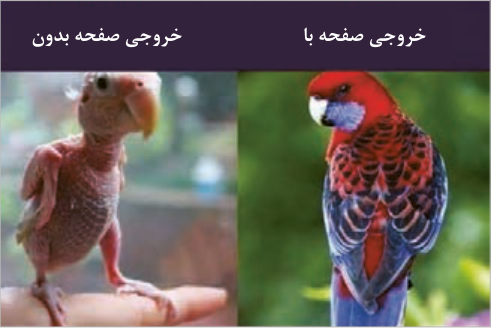
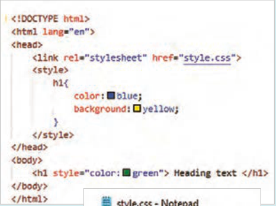
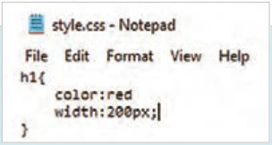
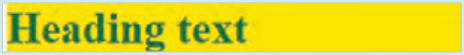

طراحی ظاهر صفحات وب با CSS
صفحه ۱۱۶
واحد یادگیری 2
طراحی ظاهر صفحات وب با CSS
آیا تابهحال اندیشیدهاید
چگونه میتوان رنگ متن و زمینه عناصر صفحه وب را مشخص نمود؟
چگونه میتوان چیدمان عناصر صفحه را با فواصل مناسب انجام داد؟
آیا میتوان بدون تغییر در ساختار HTML، ظاهر یک سایت را دگرگون نمود؟
چگونه میتوان چیدمان و استایل عناصر صفحه را در دستگاههای مختلف تغییر داد؟
جذابیت بصری صفحه وب چه تأثیری روی تجربه کاربری دارد؟
در پایان از هنرجو انتظار میرود
1 شیوههای مختلف تعریف CSS و اولویت اجرای آنها را بداند.
2 توانایی تنظیم استایل عناصر متنی شامل نوع قلم، اندازه، رنگ، وزن و تراز آنها را داشته باشد.
3 توانایی تنظیم ویژگیهای ظاهری عناصر شامل رنگ، پسزمینه، شفافیت، خط دور و سایه را داشته باشد.
4 انواع انتخابگرهای ساده، ترکیبی، شبهکلاس و ویژگی را بشناسد و از آنها برای انتخاب دقیق عناصر بهشکل بهینه استفاده نماید.
5 با مفهوم مدل جعبهای آشنا باشد و توانایی تنظیم فواصل داخلی (margin) و خارجی (padding) عناصر را داشته باشد.
6 کاربرد ویژگی Display را بداند و از آن برای کنترل نحوه نمایش عناصر استفاده نماید.
7 توانایی چیدمان واکنشگرای عناصر صفحه را توسط قابلیتهای Flex و Grid داشته باشد.
8 کدهای CSS را به شکل خوانا و با رعایت تورفتگی بهکار ببرد و برای هر یک از استایلهای صفحه از کامنتهای مناسب و قابل درک استفاده نماید.
استاندارد عملکرد
با استفاده از قابلیتهای CSS، ظاهر و چیدمان عناصر صفحه وب را مطابق با اصول و استانداردهای نوین طراحی وب، پیادهسازی و تنظیم نماید.
صفحه ۱۱۷
زیباسازی صفحه با CSS
در واحدکار قبل نحوه طراحی ساختار صفحات وب با استفاده از برچسبهای HTML آموزش داده شد.
صفحاتی که صرفاً توسط HTML ایجاد شده باشند، دارای متون ساده، پس زمینه سفید، فواصل و چیدمان پیشفرض میباشند و در نتیجه فاقد جذابیت بصری هستند. برای ایجاد ظاهری زیبا و کاربرپسند استفاده از CSS جهت استایلدهی به عناصر ضروری است. این ابزار به توسعهدهندگان وب امکان میدهد که ظاهر و چیدمان عناصر صفحه را به سادگی و با انعطاف بالا مدیریت کنند.
CSS مخفف عبارت Cascading Style Sheets و زبانی برای استایلدهی و کنترل ظاهر صفحات وب است.
این زبان به توسعهدهندگان وب امکان میدهد که ظاهر و چیدمان عناصر را کاملاً جدا از ساختار اصلی صفحه مدیریت کنند. این موضوع باعث آسانتر شدن نگهداری و بهروزرسانی سایت میشود. با استفاده از CSS میتوان استایلهای متنوعی را برای عناصر مختلف وبسایت تنظیم نمود؛ مانند تعیین رنگ متن و زمینه عناصر، ایجاد سایه، خط دور، تغییرات ظاهری در هنگام قرارگیری ماوس روی عناصر و ...

خروجی صفحه با
خروجی صفحه بدون
شکل 22
ساختار CSS CSS بهشکل مجموعهای از قوانین است که توسط انتخابگرها (selectors) و ویژگیها (properties) ایجاد میشوند. هر قانون معمولاً به صورت زیر نوشته میشود:
{ selector
;property: value
}
عبارت Selector به معنای انتخابگر است و برای انتخاب عناصر صفحه استفاده میشود. به عنوان مثال برای تعیین استایل عناصر پاراگراف، از انتخابگر p و برای انتخاب همه عناصر صفحه از علامت * استفاده میشود. عبارت Property به ویژگیهای قابل مقداردهی در CSS گفته میشود، مانند color، font-size و .border عبارت Value به مقدار ویژگی عنصر اشاره دارد.
صفحه ۱۱۸
مثال
در مثال زیر رنگ زمینه عنصر h1 با مقدار orange تنظیم شده است.
{ h1
;background-color: orange
}
نحوه بهکارگیری CSS در صفحات برای ایجاد و بهکارگیری استایلهای سفارشی روی عناصر صفحه از سه روش به شرح زیر استفاده میشود:
CSS 1 درون خطی(Inline): استایل عناصر درون تگهای HTML نوشته میشود.
مثال
در مثال زیر رنگ متن و پس زمینه عنصر h1 بهصورت درون خطی تعیین شده است:
</h1> سلام دنیا! >”h1 style=”color:blue; background-color:orange<
CSS 2 داخلی (Internal):
استایل عناصر درون تگ <style> در بخش <head> نوشته میشود.
در سبک درون خطی در صورتیکه تعداد ویژگیهای اختصاص داده شده به عنصر زیاد باشد، کد عنصر شلوغ و ناخوانا میشود. بنابراین از CSS داخلی یا خارجی برای مدیریت بهتر استایلها استفاده میشود.
مثال
مثال زیر نمونهای از CSS داخلی برای تعیین ویژگیهای عنصر h1 است:
<head>
<style>
{ h1
;color: blue
;background-color: pink
}
</style>
</head>
CSS 3 خارجی (External):
در روش CSS خارجی، استایل عناصر، درون فایلی با پسوند CSS قرار میگیرد. محتوای این فایل نیازی به تگ <style> ندارد و صرفًا سبک عناصر درون آن تعیین میشود. فایل CSS باید توسط تگ <link> به صفحه وب الحاق شود تا قوانین این فایل روی عناصر صفحه وب اعمال شود. الحاق فایل CSS به فایل HTML در بخش <head> انجام میشود:
<head>
<link rel=”stylesheet” href=”./styles.css”>
</head>
صفحه ۱۱۹
استفاده از فایلهای CSS خارجی، بهترین روش استایلدهی در پروژههای متوسط و بزرگ است. مهمترین مزایای روش خارجی عبارتاند از:
1 فایل CSS قابلیت استفاده مجدد دارد، یعنی میتواند به صفحات مختلف سایت الحاق شود.
2 با جدا شدن کدهای CSS و HTML، نگهداری، بهروزرسانی واشکالزدایی (Debug) استایل و کدهای HTML آسانتر میشود.
3 مرورگرها میتوانند فایلهای CSS خارجی را در حافظه پنهان (cache) خود ذخیره کنند، این موضوع به بارگذاری سریعتر صفحات در دفعات بعدی ورود به سایت کمک میکند.
عیب این روش این است که فایل CSS باید بهصورت مجزا بارگذاری شود و این کار ممکن است سرعت بارگذاری سبک عناصر صفحه وب را در اولین بارگذاری پایین بیاورد.
برای تمرینهای کوچک در حد سبکدهی به یک عنصر میتوان از CSS خطی استفاده نمود. سبک داخلی برای پروژههای کوچک و سبک خارجی برای پروژههای متوسط، بزرگ و پیچیده مناسب است.
اولویت اعمال انواع استایلها
چنانچه سبکهای مختلفی برای یک عنصر نوشته شده باشد، اولویت اعمال سبکها به ترتیب درون خطی، داخلی و خارجی خواهد بود. اگر عنصری دارای هیچ یک از این سبکها نباشد، از سبک عنصر والد خود استفاده میکند.
بررسی اولویت اعمال سبک روی عناصر صفحه
کار کارگاهی
یک صفحه وب با نام test-style.html ایجاد کنید.
یک فایل CSS با نام styles.css ایجاد کنید.

محتوای فایلهای HTML و CSS را مطابق تصویر مقابل تنظیم کنید.
فایلها را ذخیره و نتیجه را در مرورگر بررسی کنید.
در هر سه سبک رنگ متن مشخص شده است، اما رنگ سبک درونخطی (سبز) روی متن اعمال میشود.
رنگ زمینه فقط در سبک داخلی تعیین شده است، بنابراین رنگ زمینه زرد به عنصر h1 اعمال میشود.

پهنای عنصر فقط در سبک خارجی
خروجی
مشخص شده است، در نتیجه پهنای عنصر h1 برابر 200 پیکسل خواهد بود.

صفحه ۱۲۰
توضیحات (Comment) در CSS برای افزودن توضیحات در CSS به صورت تکخطی یا چندخطی از علائم / / از شکل ٣٢ استفاده میشود.
/* this is a comment */
شکل23
نحوه قالببندی متن در CSS CSS دارای مجموعهای از ویژگیها برای قالببندی متون است. این ویژگیها امکان تعیین فونت، اندازه فونت، ارتفاع خطوط، تزئینات متن و ... را فراهم میکنند. ویژگیهای عناصر متنی به شرح زیر است:
font-family و font-size: تعیین نوع و اندازه فونت
text-align: تعیین تراز متن شامل مقادیر left، right، center و justify
text-shadow: ایجاد سایه با رنگ و اندازه دلخواه. ساختار کلی این ویژگی به شکل زیر است:
;text-shadow: offset-x offset-y blur-radius color
شکل24
مقادیر این ویژگی به ترتیب مقدار جابهجایی افقی و عمودی سایه، میزان محو شدگی و رنگ سایه است.
text-transform: تغییر شکل حروف به صورت بزرگ،کوچک و... شامل مقادیر lowercase، �upper
cas، capitalize none،…
direction: تعیین جهت نمایش متن، شامل مقادیر ltr و rtl برای چپ به راست و راست به چپ
line-height: تعیین فاصلۀ عمودی بین خطوط متنی. این ویژگی فاصلۀ عمودی خط متن را تعیین میکند. مقدار این ویژگی شامل ارتفاع حروف بهعلاوه فضای خالی قبل و بعد آنهاست. شامل ارتفاع حروف (فونت) بهاضافه فضای خالی قبل و بعد از آنهاست.
text-decoration: تعیین تزیینات متن، شامل مقادیر none، underline، overline، .line-through
ویژگی text-decoration با مقدار none موجب حذف زیرخط لینک میشود.
vertical-align: تراز متن در راستای عمودی، شامل مقادیر top، bottom، baseline و...